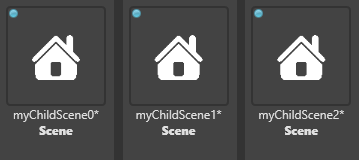
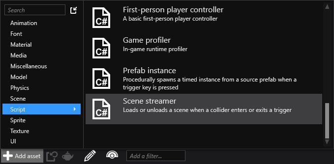
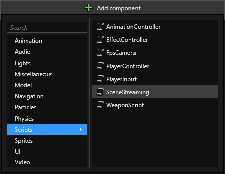

Load and unload scenes at runtime
Loading scenes
You can use UrlReference<Scene> properties on your scripts to assign Scene assets then load the via code:
public UrlReference<Scene> ChildSceneUrl { get; set; }
//...
var childScene = Content.Load(ChildSceneUrl);
parentScene.Children.Add(childScene);
Alternatively you can load scenes by name. The following code loads three scenes and adds them as children:
var myChildScene0 = Content.Load<Scene>(url0);
var myChildScene1 = Content.Load<Scene>(url1);
var myChildScene2 = Content.Load<Scene>(url2);
myParentScene.Children.Add(myChildScene0);
myParentScene.Children.Add(myChildScene1);
myChildScene1.Add(myChildScene2);
Note
If you are not using UrlReference make sure all the scenes you want to load are included in the build as root assets (indicated with blue icons in the Asset View).

To include a scene in the build, in the Asset View, right-click the scene asset and select Include in build as root asset.
For more information about including assets in the build, see Manage assets.
For more information about scene hierarchies, see Manage scenes.
Unloading scenes
Before a scene is unloaded remove it from the scene hierarchy:
parentScene.Children.Remove(childScene);
//Alternatively
childScene.Parent = null;
Once the scene asset is no longer required make sure to unload it:
Content.Unload(childScene);
Scene streaming script
Stride also includes a scene streaming script that uses a trigger to load scenes.
Note
The scene streaming script is included as an example. It isn't always the most appropriate way to load scenes. Feel free to modify it as much as you need.
Add a scene streaming script
To add a scene streaming script, in the Asset View (bottom pane by default), click Add asset and select Scripts > Scene streaming.

Game Studio adds a scene streaming script to your project assets.
Use the scene streaming script
Create a trigger entity. When this is triggered at runtime, Stride loads the scene. For more information about creating triggers, see Triggers.
How the entity is triggered is defined in the collider properties. For more information, see Colliders.
Create an entity and position it where you want the scene to load.
With the entity selected, in the Property Grid (on the righy by default), click Add component and select the scene streaming script.

Note
If the scene streaming script doesn't appear in the list of components, reload the assemblies.
Game Studio adds the script to the entity as a component.

Under Url, specify the scene asset you want to load.
Under Trigger, specify the entity you created in step 1.
At runtime, when the trigger you created in step 1 is triggered, Stride loads the scene you specified in step 4.
Scene streaming script properties
| Property | Description |
|---|---|
| Pre Load Depth | The point (in world units) at which the scene begins to load. For example, if 2.5, the scene begins to load when the player is 2.5 units into the trigger area |
| Load Depth | The point (in world units) at which the game freezes to finish loading the scene if it hasn't loaded already. For example, if 5, the game freezes when the player is 5 units into the trigger area |
| Priority | The script priority. For more information, see Scheduling and priorities |